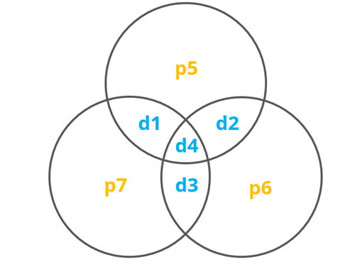
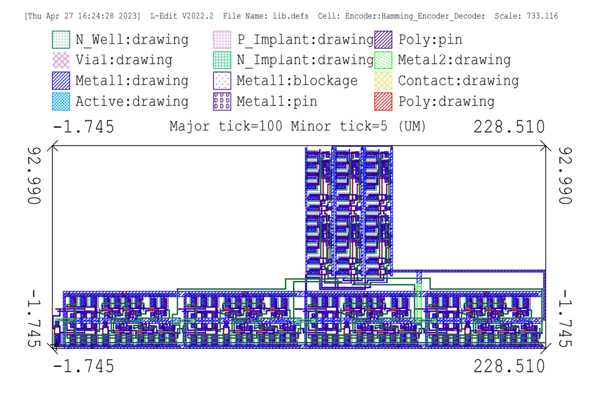
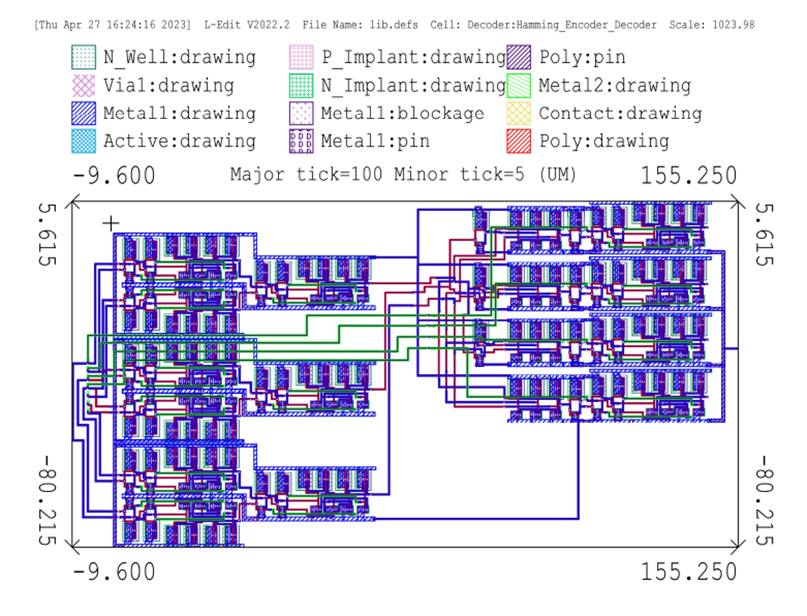

Hamming Encoder IC Design Project
April 28, 2023
Bradlee Harrison
Error correction is essential in many digital systems to ensure the integrity of data. Take, for instance, the case of transmitting a single character 'A'. If the character is encoded as an ASCII value, 'A' corresponds to 0x41, and in binary 01000010. If a single bit error occurs during the transmission, and the received character is now 01010010, the receiver would interpret this character now as an ‘R.’
This becomes a significant problem when applied at large scale and in noisy systems, where a valid string
of characters could become entirely indecipherable. The importance of each bit is even more significant when dealing
with compressed files or data, where even a single bit can be important enough to render the information invalid.
Within digital systems, error-correcting codes are used to reduce the probability of errors in data,
allowing for reliable transmission within noisy mediums. The idea behind an error-correcting code is to cleverly
add redundancy to a message, called parity, so that when an error occurs, the parity can be used to detect
and correct an error.
The Hamming (7,4) code is one such error-correcting code. The Hamming (7,4) code is a simple block code
(There are two types of error correcting codes, Block Codes and Convolutional Codes.)
that adds 3 bits of redundancy to 4-bit blocks to create 7-bit blocks.
This project focuses on the design, simulation, layout, and verification of a Hamming (7,4) encoder
and decoder circuit.
Description
In a Hamming (7,4) code, three parity bits are mapped and added to the block of data. The configuration can be seen below, where each circle has a parity bit chosen so that the number of bits in each circle is odd.
Hamming Diagram
The parity choice can be expressed in logic equations:
- P5 = XOR(D1, D2, D4)
- P6 = XOR(D2, D3, D4)
- P7 = XOR(D1, D3, D4)
When decoding, an error can be detected if the number of bits in any of the 'circles' of the map in Figure 2 is odd.
This can also be expressed as:
- E1 = XOR(D1, D2, D4, P5)
- E2 = XOR(D2, D3, D4, P6)
- E3 = XOR(D1, D3, D4, P7)
After decoding, any single-bit error can be corrected based on the intersection of the erroneous 'circles', E1, E2, E3, corresponding to p5, p6, and p7 in Figure 2. This can be expressed as:
- D1 = E1E2E3 XOR D1
- D2 = E1E2E3 XOR D2
- D3 = E1E2E3 XOR D3
- D4 = E1E2E3 XOR D4
where E1, E2, and E3 are the complements of E1, E2, and E3, respectively.
Simulation
Simulation tests were run to confirm the functionality of the design. This phase involved generating a test bench to simulate all possible input combinations and validate the encoder and decoder's ability to accurately handle data and errors.
Full Logic-Level Circuit Simulation


Layout
In the layout phase, the digital schematic of the Hamming (7,4) encoder and decoder was translated into an actual IC design. This involved creating a physical layout that accurately represents the design schematic while optimizing for space and performance.
Encoder Layout
Decoder Layout
Verification
The final phase of the project was verification, where the completed layout was checked against the original design and simulations. This was done using a software tool called Calibre. Calibre was used to run a Design Rule Check (DRC) to ensure that the layout design is feasible. Calibre was also used to perfrom a Layout vs Schematic (LVS) check to ensure that the layout accurately represented the schematic design.
Encoder and Decoder DRC and LVS successful